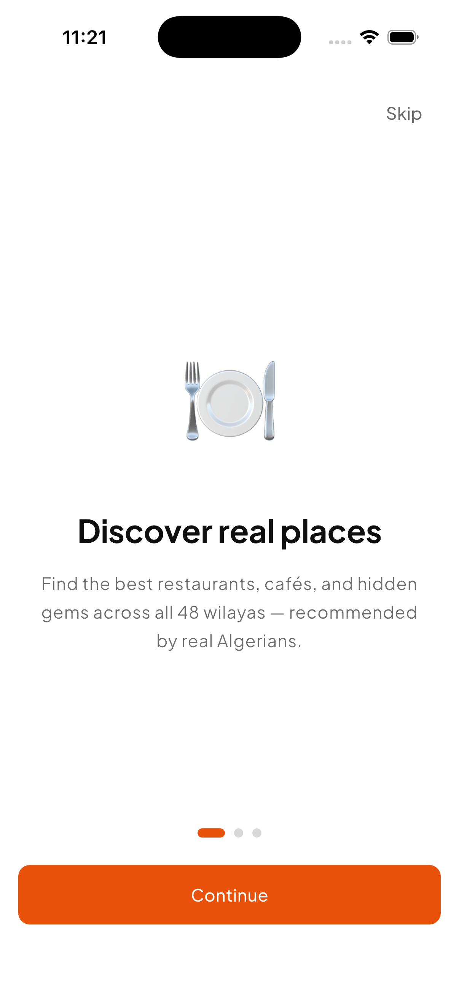
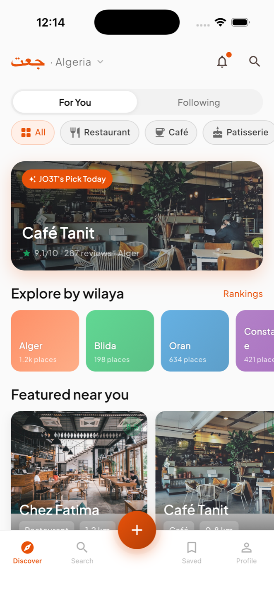
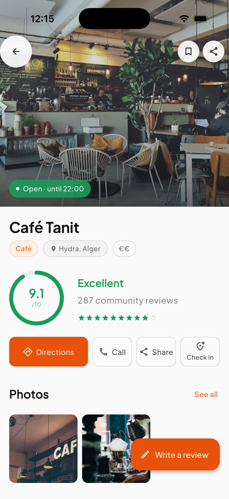
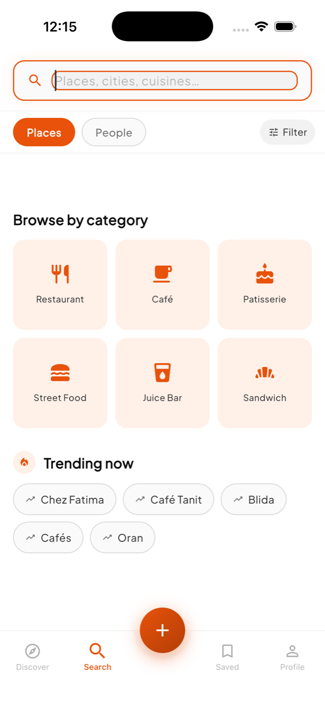
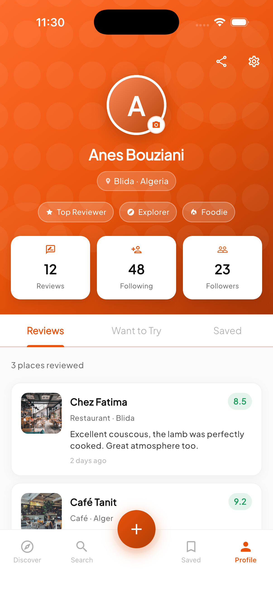
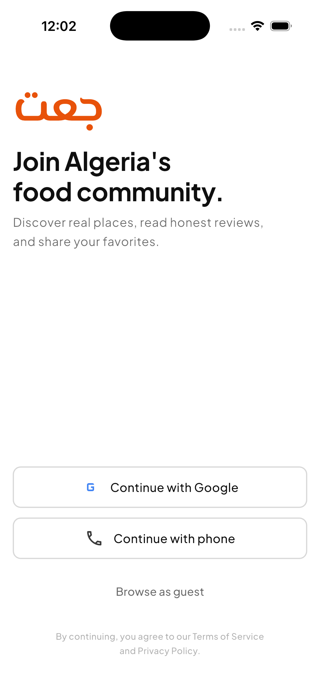

Community food & venue discovery · Algeria
JO3T جعت
Find places worth eating at in Algeria — ranked by the people who actually ate there.
An open-source Flutter app. There is no published build yet — no App Store listing, no Play listing, no release APK. Clone the repository and build it yourself.
What the app does
Every item below is implemented in the app today.
-
Discovery feed
A scrollable feed of places filtered by wilaya and by category — restaurant, café, patisserie, street food, juice bar, sandwich. A “For You” / “Following” toggle switches between the general feed and activity from people you follow.
-
The JO3T Score
Each place carries a single score from 1 to 10. It is a weighted average of member reviews adjusted for recency, with a confidence dampener so a place with three reviews cannot outrank one with three hundred. The score is computed server-side in a Cloud Function.
-
Place profiles
Cover photo and full gallery, the score with review count, opening hours for all seven days with an open/closed indicator, price range, address with a directions action, place tags, and the review list.
-
Write a review
A 1–10 score picker, free-text notes, and photos attached from the device camera roll. Reviews appear on the place profile and on your own profile.
-
Search
A category grid and trending shortcuts before you type, live results as you type, and a filter sheet for category, price range, minimum score, and open-now. A People tab searches members instead of places.
-
Map
A Google map with custom pins per category and a preview sheet when you tap one. With no Maps API key configured, the app falls back to an illustrated map instead of failing.
-
Add a place
A multi-step form — name, category, wilaya and neighbourhood, price range, photos — that submits into a moderation queue rather than publishing straight to the feed.
-
Social layer
Follow other members, see their reviews and saves in the Following feed, keep saved and want-to-try lists, group places into collections, and check the weekly per-wilaya leaderboard.
-
Venue owner tools
Claim a listing through a three-step verification flow, then manage opening hours, official photos, menu link and contact details, and reply publicly to reviews.
-
Works offline
Saved places, the feed and place details are cached locally with Hive on a time-to-live basis, and a banner slides down when the device loses connectivity.
Inside the app
Say what you are looking for
Onboarding sets the two things the feed needs: the wilaya you are in and the kinds of places you care about. From there the app has enough to fill a feed without asking you to search for anything.

Start from where you are
The feed opens on your wilaya. Category chips narrow it down, the wilaya cards jump you to another province, and a featured card surfaces the pick of the day. Every card shows the place’s score before you tap it.

One number, honestly earned
The place profile leads with the JO3T Score and the number of community reviews behind it. Below it sit the actions that matter on the ground — directions, call, share, check-in — then photos, opening hours, price range and the reviews themselves.

Search that knows the categories
Before you type, search shows a category grid and what other members are looking up right now. As you type, results filter live; the filter sheet layers on price range, minimum score and open-now. Switch to the People tab to find members instead of places.

Your record, and the people you follow
Your profile keeps the count of reviews you have written and the people you follow, plus badges you earn along the way. Tabs split what you have reviewed from what you still want to try and what you have saved.


Data and accounts
What the app actually does with your data, and when.
-
No backend by default
Out of the box the app runs entirely on local sample data. No server is contacted, and no account is required to browse, search or open a place.
-
Firebase is opt-in
Firebase Auth, Firestore and Storage are only wired in when the build is compiled with the Firebase flag enabled. Without that flag the repositories resolve to the local sample implementations.
-
Phone-number sign-in
When Firebase is enabled, authentication is phone-number OTP, with Google sign-in as an alternative. Signing in stores a profile — display name, username, bio, wilaya, avatar — in Firestore.
-
Crash and usage reporting
Crashlytics and Analytics are initialised only as part of Firebase start-up. In a build without Firebase they never run. In a build with Firebase they collect crash reports and usage events as those SDKs normally do.
-
Photos and location
Photos are read from the device only when you attach them to a review or a place submission. Maps are rendered locally; with no Maps API key the app shows an illustrated map instead.
Under the hood
- Framework
- Flutter (Dart)
- State management
- Riverpod
- Navigation
- GoRouter
- Backend
- Firebase — Auth, Firestore, Storage, Cloud Functions (optional)
- Maps
- google_maps_flutter, with illustrated fallback
- Offline cache
- Hive, with time-to-live invalidation
- Motion
- flutter_animate
- Platforms
- Android and iOS
- Version
- 1.0.0
- Coverage
- 48 Algerian wilayas
Build it from source
The full Flutter project — app, Cloud Functions, Firestore rules — is on GitHub. Clone it, run flutter pub get, and run it on a device or emulator.